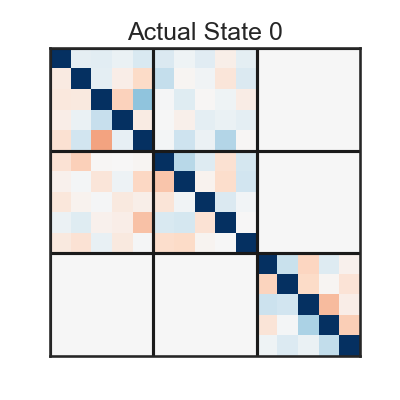
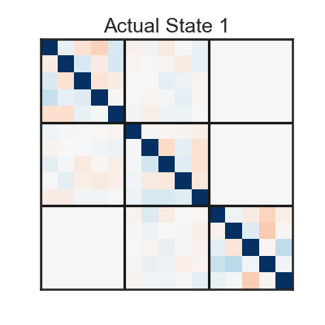
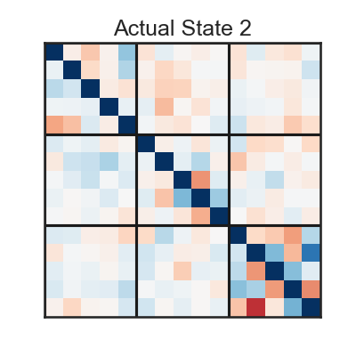
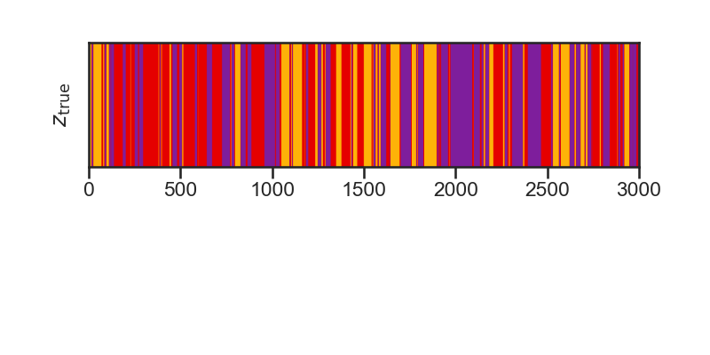
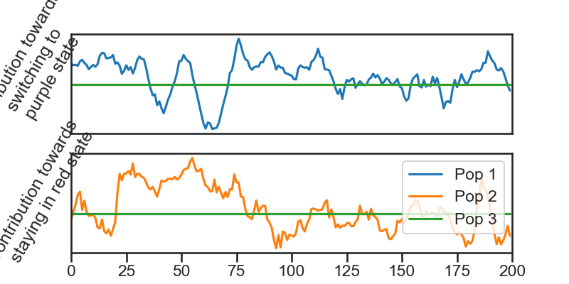
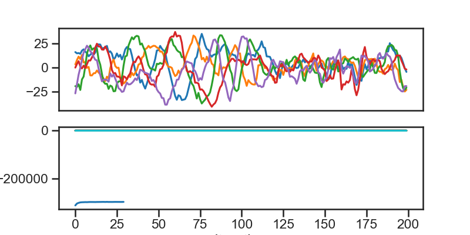
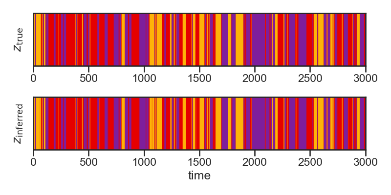
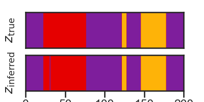
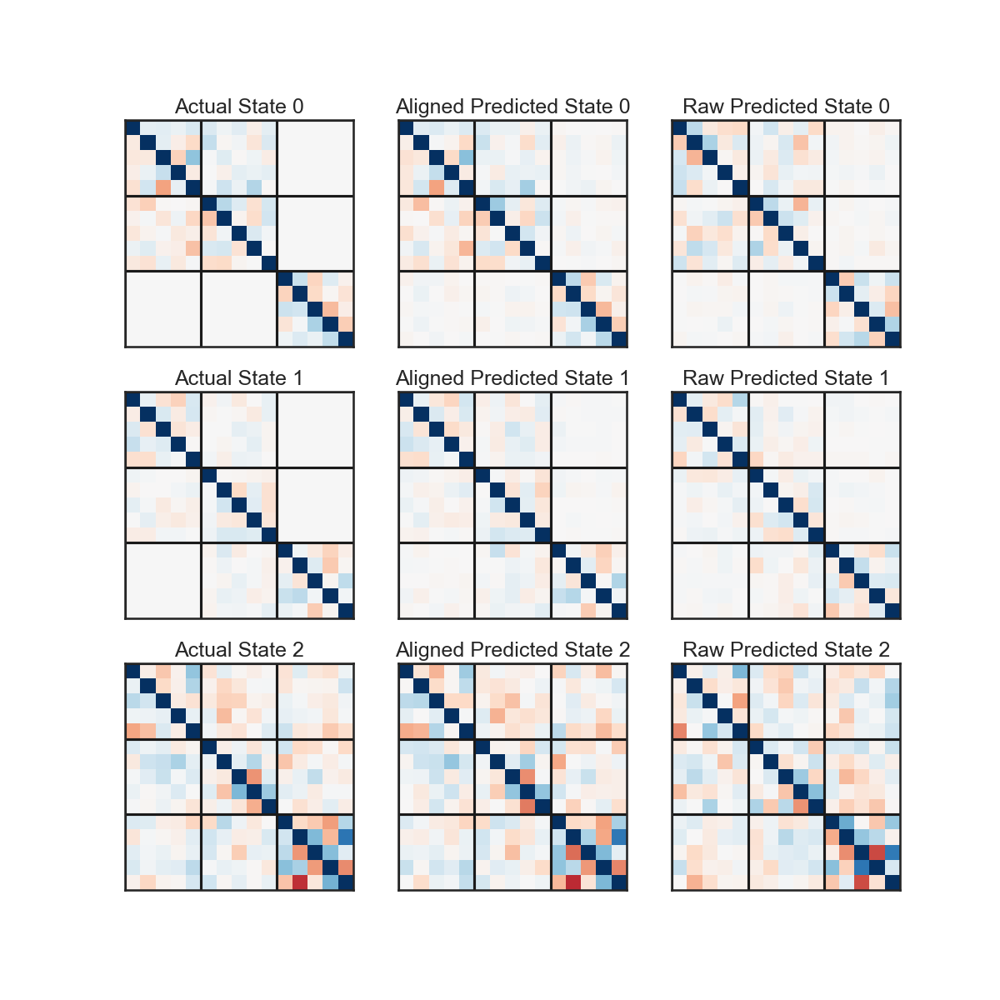
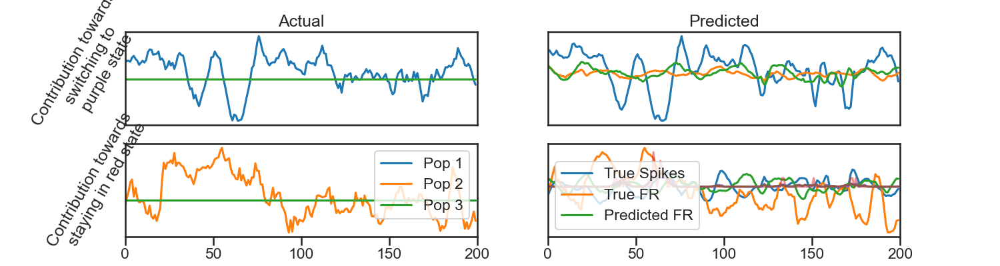

Multi-Population rSLDS
Note
Click here to download the full example code
Multi-Population rSLDS#
- 
- 
- 
- 
- 
- 
- 
- 
- 
- 
alphas: [0.05336111 0.03343876 0.08800889]
0%| | 0/10 [00:00<?, ?it/s]
ARHMM Initialization restarts: 0%| | 0/10 [00:00<?, ?it/s]Initializing with an ARHMM using 25 steps of EM.
0%| | 0/25 [00:00<?, ?it/s]
LP: -88550.7: 0%| | 0/25 [00:00<?, ?it/s]
LP: -88553.0: 0%| | 0/25 [00:00<?, ?it/s]
LP: -88356.8: 0%| | 0/25 [00:00<?, ?it/s]
LP: -88356.8: 8%|8 | 2/25 [00:00<00:01, 13.04it/s]
LP: -88050.6: 8%|8 | 2/25 [00:00<00:01, 13.04it/s]
LP: -87651.4: 8%|8 | 2/25 [00:00<00:01, 13.04it/s]
LP: -87651.4: 16%|#6 | 4/25 [00:00<00:01, 13.37it/s]
LP: -87209.9: 16%|#6 | 4/25 [00:00<00:01, 13.37it/s]
LP: -86835.6: 16%|#6 | 4/25 [00:00<00:01, 13.37it/s]
LP: -86835.6: 24%|##4 | 6/25 [00:00<00:01, 12.62it/s]
LP: -86617.6: 24%|##4 | 6/25 [00:00<00:01, 12.62it/s]
LP: -86495.2: 24%|##4 | 6/25 [00:00<00:01, 12.62it/s]
LP: -86495.2: 32%|###2 | 8/25 [00:00<00:01, 11.54it/s]
LP: -86415.0: 32%|###2 | 8/25 [00:00<00:01, 11.54it/s]
LP: -86349.3: 32%|###2 | 8/25 [00:00<00:01, 11.54it/s]
LP: -86349.3: 40%|#### | 10/25 [00:00<00:01, 10.15it/s]
LP: -86313.8: 40%|#### | 10/25 [00:01<00:01, 10.15it/s]
LP: -86280.3: 40%|#### | 10/25 [00:01<00:01, 10.15it/s]
LP: -86280.3: 48%|####8 | 12/25 [00:01<00:01, 10.26it/s]
LP: -86262.2: 48%|####8 | 12/25 [00:01<00:01, 10.26it/s]
LP: -86241.7: 48%|####8 | 12/25 [00:01<00:01, 10.26it/s]
LP: -86241.7: 56%|#####6 | 14/25 [00:01<00:01, 10.64it/s]
LP: -86228.6: 56%|#####6 | 14/25 [00:01<00:01, 10.64it/s]
LP: -86217.4: 56%|#####6 | 14/25 [00:01<00:01, 10.64it/s]
LP: -86217.4: 64%|######4 | 16/25 [00:01<00:00, 12.24it/s]
LP: -86209.1: 64%|######4 | 16/25 [00:01<00:00, 12.24it/s]
LP: -86193.5: 64%|######4 | 16/25 [00:01<00:00, 12.24it/s]
LP: -86193.5: 72%|#######2 | 18/25 [00:01<00:00, 13.00it/s]
LP: -86183.7: 72%|#######2 | 18/25 [00:01<00:00, 13.00it/s]
LP: -86175.3: 72%|#######2 | 18/25 [00:01<00:00, 13.00it/s]
LP: -86175.3: 80%|######## | 20/25 [00:01<00:00, 13.27it/s]
LP: -86165.9: 80%|######## | 20/25 [00:01<00:00, 13.27it/s]
LP: -86156.8: 80%|######## | 20/25 [00:01<00:00, 13.27it/s]
LP: -86156.8: 88%|########8 | 22/25 [00:01<00:00, 11.68it/s]
LP: -86140.8: 88%|########8 | 22/25 [00:02<00:00, 11.68it/s]
LP: -86128.8: 88%|########8 | 22/25 [00:02<00:00, 11.68it/s]
LP: -86128.8: 96%|#########6| 24/25 [00:02<00:00, 10.73it/s]
LP: -86116.7: 96%|#########6| 24/25 [00:02<00:00, 10.73it/s]
LP: -86116.7: 100%|##########| 25/25 [00:02<00:00, 11.58it/s]
ARHMM Initialization restarts: 10%|# | 1/10 [00:02<00:20, 2.24s/it]Initializing with an ARHMM using 25 steps of EM.
0%| | 0/25 [00:00<?, ?it/s]
LP: -88543.6: 0%| | 0/25 [00:00<?, ?it/s]
LP: -88545.9: 0%| | 0/25 [00:00<?, ?it/s]
LP: -88363.0: 0%| | 0/25 [00:00<?, ?it/s]
LP: -88363.0: 8%|8 | 2/25 [00:00<00:01, 12.50it/s]
LP: -88127.2: 8%|8 | 2/25 [00:00<00:01, 12.50it/s]
LP: -87884.1: 8%|8 | 2/25 [00:00<00:01, 12.50it/s]
LP: -87884.1: 16%|#6 | 4/25 [00:00<00:01, 10.73it/s]
LP: -87642.4: 16%|#6 | 4/25 [00:00<00:01, 10.73it/s]
LP: -87395.3: 16%|#6 | 4/25 [00:00<00:01, 10.73it/s]
LP: -87395.3: 24%|##4 | 6/25 [00:00<00:01, 10.55it/s]
LP: -87136.5: 24%|##4 | 6/25 [00:00<00:01, 10.55it/s]
LP: -86886.3: 24%|##4 | 6/25 [00:00<00:01, 10.55it/s]
LP: -86886.3: 32%|###2 | 8/25 [00:00<00:01, 10.38it/s]
LP: -86675.0: 32%|###2 | 8/25 [00:00<00:01, 10.38it/s]
LP: -86534.1: 32%|###2 | 8/25 [00:00<00:01, 10.38it/s]
LP: -86534.1: 40%|#### | 10/25 [00:00<00:01, 10.87it/s]
LP: -86427.5: 40%|#### | 10/25 [00:01<00:01, 10.87it/s]
LP: -86343.3: 40%|#### | 10/25 [00:01<00:01, 10.87it/s]
LP: -86343.3: 48%|####8 | 12/25 [00:01<00:01, 11.17it/s]
LP: -86280.3: 48%|####8 | 12/25 [00:01<00:01, 11.17it/s]
LP: -86238.2: 48%|####8 | 12/25 [00:01<00:01, 11.17it/s]
LP: -86238.2: 56%|#####6 | 14/25 [00:01<00:00, 12.19it/s]
LP: -86199.4: 56%|#####6 | 14/25 [00:01<00:00, 12.19it/s]
LP: -86174.6: 56%|#####6 | 14/25 [00:01<00:00, 12.19it/s]
LP: -86174.6: 64%|######4 | 16/25 [00:01<00:00, 13.29it/s]
LP: -86146.4: 64%|######4 | 16/25 [00:01<00:00, 13.29it/s]
LP: -86126.4: 64%|######4 | 16/25 [00:01<00:00, 13.29it/s]
LP: -86126.4: 72%|#######2 | 18/25 [00:01<00:00, 14.03it/s]
LP: -86101.5: 72%|#######2 | 18/25 [00:01<00:00, 14.03it/s]
LP: -86087.0: 72%|#######2 | 18/25 [00:01<00:00, 14.03it/s]
LP: -86087.0: 80%|######## | 20/25 [00:01<00:00, 14.33it/s]
LP: -86066.6: 80%|######## | 20/25 [00:01<00:00, 14.33it/s]
LP: -86054.1: 80%|######## | 20/25 [00:01<00:00, 14.33it/s]
LP: -86054.1: 88%|########8 | 22/25 [00:01<00:00, 14.24it/s]
LP: -86034.5: 88%|########8 | 22/25 [00:01<00:00, 14.24it/s]
LP: -86021.3: 88%|########8 | 22/25 [00:01<00:00, 14.24it/s]
LP: -86021.3: 96%|#########6| 24/25 [00:01<00:00, 15.35it/s]
LP: -85998.0: 96%|#########6| 24/25 [00:01<00:00, 15.35it/s]
LP: -85998.0: 100%|##########| 25/25 [00:01<00:00, 13.16it/s]
ARHMM Initialization restarts: 20%|## | 2/10 [00:04<00:16, 2.10s/it]Initializing with an ARHMM using 25 steps of EM.
0%| | 0/25 [00:00<?, ?it/s]
LP: -88563.6: 0%| | 0/25 [00:00<?, ?it/s]
LP: -88566.0: 0%| | 0/25 [00:00<?, ?it/s]
LP: -88406.6: 0%| | 0/25 [00:00<?, ?it/s]
LP: -88175.4: 0%| | 0/25 [00:00<?, ?it/s]
LP: -88175.4: 12%|#2 | 3/25 [00:00<00:00, 23.22it/s]
LP: -87874.9: 12%|#2 | 3/25 [00:00<00:00, 23.22it/s]
LP: -87541.0: 12%|#2 | 3/25 [00:00<00:00, 23.22it/s]
LP: -87217.5: 12%|#2 | 3/25 [00:00<00:00, 23.22it/s]
LP: -87217.5: 24%|##4 | 6/25 [00:00<00:01, 16.60it/s]
LP: -86977.8: 24%|##4 | 6/25 [00:00<00:01, 16.60it/s]
LP: -86811.6: 24%|##4 | 6/25 [00:00<00:01, 16.60it/s]
LP: -86811.6: 32%|###2 | 8/25 [00:00<00:01, 15.09it/s]
LP: -86691.1: 32%|###2 | 8/25 [00:00<00:01, 15.09it/s]
LP: -86604.0: 32%|###2 | 8/25 [00:00<00:01, 15.09it/s]
LP: -86604.0: 40%|#### | 10/25 [00:00<00:01, 14.12it/s]
LP: -86536.7: 40%|#### | 10/25 [00:00<00:01, 14.12it/s]
LP: -86480.9: 40%|#### | 10/25 [00:00<00:01, 14.12it/s]
LP: -86480.9: 48%|####8 | 12/25 [00:00<00:00, 14.96it/s]
LP: -86439.7: 48%|####8 | 12/25 [00:00<00:00, 14.96it/s]
LP: -86400.3: 48%|####8 | 12/25 [00:00<00:00, 14.96it/s]
LP: -86372.9: 48%|####8 | 12/25 [00:00<00:00, 14.96it/s]
LP: -86372.9: 60%|###### | 15/25 [00:00<00:00, 16.15it/s]
LP: -86346.6: 60%|###### | 15/25 [00:01<00:00, 16.15it/s]
LP: -86326.7: 60%|###### | 15/25 [00:01<00:00, 16.15it/s]
LP: -86326.7: 68%|######8 | 17/25 [00:01<00:00, 15.83it/s]
LP: -86308.0: 68%|######8 | 17/25 [00:01<00:00, 15.83it/s]
LP: -86297.3: 68%|######8 | 17/25 [00:01<00:00, 15.83it/s]
LP: -86289.5: 68%|######8 | 17/25 [00:01<00:00, 15.83it/s]
LP: -86289.5: 80%|######## | 20/25 [00:01<00:00, 17.01it/s]
LP: -86278.8: 80%|######## | 20/25 [00:01<00:00, 17.01it/s]
LP: -86273.6: 80%|######## | 20/25 [00:01<00:00, 17.01it/s]
LP: -86269.4: 80%|######## | 20/25 [00:01<00:00, 17.01it/s]
LP: -86269.4: 92%|#########2| 23/25 [00:01<00:00, 19.83it/s]
LP: -86266.0: 92%|#########2| 23/25 [00:01<00:00, 19.83it/s]
LP: -86263.5: 92%|#########2| 23/25 [00:01<00:00, 19.83it/s]
LP: -86263.5: 100%|##########| 25/25 [00:01<00:00, 17.88it/s]
ARHMM Initialization restarts: 30%|### | 3/10 [00:05<00:12, 1.79s/it]Initializing with an ARHMM using 25 steps of EM.
0%| | 0/25 [00:00<?, ?it/s]
LP: -88547.5: 0%| | 0/25 [00:00<?, ?it/s]
LP: -88549.6: 0%| | 0/25 [00:00<?, ?it/s]
LP: -88363.1: 0%| | 0/25 [00:00<?, ?it/s]
LP: -88363.1: 8%|8 | 2/25 [00:00<00:01, 19.27it/s]
LP: -88060.3: 8%|8 | 2/25 [00:00<00:01, 19.27it/s]
LP: -87632.6: 8%|8 | 2/25 [00:00<00:01, 19.27it/s]
LP: -87632.6: 16%|#6 | 4/25 [00:00<00:01, 15.78it/s]
LP: -87159.0: 16%|#6 | 4/25 [00:00<00:01, 15.78it/s]
LP: -86797.0: 16%|#6 | 4/25 [00:00<00:01, 15.78it/s]
LP: -86797.0: 24%|##4 | 6/25 [00:00<00:01, 15.33it/s]
LP: -86604.4: 24%|##4 | 6/25 [00:00<00:01, 15.33it/s]
LP: -86488.7: 24%|##4 | 6/25 [00:00<00:01, 15.33it/s]
LP: -86488.7: 32%|###2 | 8/25 [00:00<00:01, 14.08it/s]
LP: -86406.2: 32%|###2 | 8/25 [00:00<00:01, 14.08it/s]
LP: -86342.3: 32%|###2 | 8/25 [00:00<00:01, 14.08it/s]
LP: -86342.3: 40%|#### | 10/25 [00:00<00:01, 14.17it/s]
LP: -86296.8: 40%|#### | 10/25 [00:00<00:01, 14.17it/s]
LP: -86247.3: 40%|#### | 10/25 [00:00<00:01, 14.17it/s]
LP: -86247.3: 48%|####8 | 12/25 [00:00<00:00, 15.68it/s]
LP: -86209.6: 48%|####8 | 12/25 [00:00<00:00, 15.68it/s]
LP: -86171.0: 48%|####8 | 12/25 [00:00<00:00, 15.68it/s]
LP: -86171.0: 56%|#####6 | 14/25 [00:00<00:00, 15.61it/s]
LP: -86143.4: 56%|#####6 | 14/25 [00:00<00:00, 15.61it/s]
LP: -86111.4: 56%|#####6 | 14/25 [00:01<00:00, 15.61it/s]
LP: -86111.4: 64%|######4 | 16/25 [00:01<00:00, 15.83it/s]
LP: -86082.2: 64%|######4 | 16/25 [00:01<00:00, 15.83it/s]
LP: -86042.8: 64%|######4 | 16/25 [00:01<00:00, 15.83it/s]
LP: -86042.8: 72%|#######2 | 18/25 [00:01<00:00, 15.01it/s]
LP: -86006.3: 72%|#######2 | 18/25 [00:01<00:00, 15.01it/s]
LP: -85957.5: 72%|#######2 | 18/25 [00:01<00:00, 15.01it/s]
LP: -85957.5: 80%|######## | 20/25 [00:01<00:00, 16.05it/s]
LP: -85891.3: 80%|######## | 20/25 [00:01<00:00, 16.05it/s]
LP: -85807.6: 80%|######## | 20/25 [00:01<00:00, 16.05it/s]
LP: -85807.6: 88%|########8 | 22/25 [00:01<00:00, 14.93it/s]
LP: -85725.3: 88%|########8 | 22/25 [00:01<00:00, 14.93it/s]
LP: -85645.0: 88%|########8 | 22/25 [00:01<00:00, 14.93it/s]
LP: -85645.0: 96%|#########6| 24/25 [00:01<00:00, 13.60it/s]
LP: -85570.7: 96%|#########6| 24/25 [00:01<00:00, 13.60it/s]
LP: -85570.7: 100%|##########| 25/25 [00:01<00:00, 14.49it/s]
ARHMM Initialization restarts: 40%|#### | 4/10 [00:07<00:10, 1.78s/it]Initializing with an ARHMM using 25 steps of EM.
0%| | 0/25 [00:00<?, ?it/s]
LP: -88564.2: 0%| | 0/25 [00:00<?, ?it/s]
LP: -88565.8: 0%| | 0/25 [00:00<?, ?it/s]
LP: -88415.3: 0%| | 0/25 [00:00<?, ?it/s]
LP: -88415.3: 8%|8 | 2/25 [00:00<00:01, 18.50it/s]
LP: -88211.4: 8%|8 | 2/25 [00:00<00:01, 18.50it/s]
LP: -87988.9: 8%|8 | 2/25 [00:00<00:01, 18.50it/s]
LP: -87988.9: 16%|#6 | 4/25 [00:00<00:01, 17.22it/s]
LP: -87765.8: 16%|#6 | 4/25 [00:00<00:01, 17.22it/s]
LP: -87522.8: 16%|#6 | 4/25 [00:00<00:01, 17.22it/s]
LP: -87522.8: 24%|##4 | 6/25 [00:00<00:01, 17.78it/s]
LP: -87245.8: 24%|##4 | 6/25 [00:00<00:01, 17.78it/s]
LP: -86996.6: 24%|##4 | 6/25 [00:00<00:01, 17.78it/s]
LP: -86996.6: 32%|###2 | 8/25 [00:00<00:00, 18.26it/s]
LP: -86810.2: 32%|###2 | 8/25 [00:00<00:00, 18.26it/s]
LP: -86680.2: 32%|###2 | 8/25 [00:00<00:00, 18.26it/s]
LP: -86680.2: 40%|#### | 10/25 [00:00<00:00, 16.41it/s]
LP: -86585.3: 40%|#### | 10/25 [00:00<00:00, 16.41it/s]
LP: -86507.5: 40%|#### | 10/25 [00:00<00:00, 16.41it/s]
LP: -86507.5: 48%|####8 | 12/25 [00:00<00:00, 15.95it/s]
LP: -86446.2: 48%|####8 | 12/25 [00:00<00:00, 15.95it/s]
LP: -86405.9: 48%|####8 | 12/25 [00:00<00:00, 15.95it/s]
LP: -86372.4: 48%|####8 | 12/25 [00:00<00:00, 15.95it/s]
LP: -86372.4: 60%|###### | 15/25 [00:00<00:00, 18.70it/s]
LP: -86338.4: 60%|###### | 15/25 [00:00<00:00, 18.70it/s]
LP: -86310.8: 60%|###### | 15/25 [00:00<00:00, 18.70it/s]
LP: -86280.0: 60%|###### | 15/25 [00:00<00:00, 18.70it/s]
LP: -86280.0: 72%|#######2 | 18/25 [00:00<00:00, 20.09it/s]
LP: -86247.6: 72%|#######2 | 18/25 [00:01<00:00, 20.09it/s]
LP: -86218.4: 72%|#######2 | 18/25 [00:01<00:00, 20.09it/s]
LP: -86181.1: 72%|#######2 | 18/25 [00:01<00:00, 20.09it/s]
LP: -86181.1: 84%|########4 | 21/25 [00:01<00:00, 20.07it/s]
LP: -86149.1: 84%|########4 | 21/25 [00:01<00:00, 20.07it/s]
LP: -86110.1: 84%|########4 | 21/25 [00:01<00:00, 20.07it/s]
LP: -86062.6: 84%|########4 | 21/25 [00:01<00:00, 20.07it/s]
LP: -86062.6: 96%|#########6| 24/25 [00:01<00:00, 17.48it/s]
LP: -86011.9: 96%|#########6| 24/25 [00:01<00:00, 17.48it/s]
LP: -86011.9: 100%|##########| 25/25 [00:01<00:00, 17.62it/s]
ARHMM Initialization restarts: 50%|##### | 5/10 [00:08<00:08, 1.66s/it]Initializing with an ARHMM using 25 steps of EM.
0%| | 0/25 [00:00<?, ?it/s]
LP: -88560.5: 0%| | 0/25 [00:00<?, ?it/s]
LP: -88562.2: 0%| | 0/25 [00:00<?, ?it/s]
LP: -88412.2: 0%| | 0/25 [00:00<?, ?it/s]
LP: -88212.4: 0%| | 0/25 [00:00<?, ?it/s]
LP: -88212.4: 12%|#2 | 3/25 [00:00<00:00, 26.17it/s]
LP: -87975.0: 12%|#2 | 3/25 [00:00<00:00, 26.17it/s]
LP: -87693.5: 12%|#2 | 3/25 [00:00<00:00, 26.17it/s]
LP: -87390.3: 12%|#2 | 3/25 [00:00<00:00, 26.17it/s]
LP: -87390.3: 24%|##4 | 6/25 [00:00<00:01, 16.31it/s]
LP: -87118.9: 24%|##4 | 6/25 [00:00<00:01, 16.31it/s]
LP: -86881.5: 24%|##4 | 6/25 [00:00<00:01, 16.31it/s]
LP: -86881.5: 32%|###2 | 8/25 [00:00<00:01, 14.91it/s]
LP: -86666.9: 32%|###2 | 8/25 [00:00<00:01, 14.91it/s]
LP: -86471.1: 32%|###2 | 8/25 [00:00<00:01, 14.91it/s]
LP: -86471.1: 40%|#### | 10/25 [00:00<00:00, 15.04it/s]
LP: -86320.8: 40%|#### | 10/25 [00:00<00:00, 15.04it/s]
LP: -86211.7: 40%|#### | 10/25 [00:00<00:00, 15.04it/s]
LP: -86211.7: 48%|####8 | 12/25 [00:00<00:00, 14.01it/s]
LP: -86121.5: 48%|####8 | 12/25 [00:00<00:00, 14.01it/s]
LP: -86034.0: 48%|####8 | 12/25 [00:00<00:00, 14.01it/s]
LP: -86034.0: 56%|#####6 | 14/25 [00:00<00:00, 12.89it/s]
LP: -85977.4: 56%|#####6 | 14/25 [00:01<00:00, 12.89it/s]
LP: -85942.5: 56%|#####6 | 14/25 [00:01<00:00, 12.89it/s]
LP: -85942.5: 64%|######4 | 16/25 [00:01<00:00, 13.13it/s]
LP: -85926.8: 64%|######4 | 16/25 [00:01<00:00, 13.13it/s]
LP: -85916.4: 64%|######4 | 16/25 [00:01<00:00, 13.13it/s]
LP: -85916.4: 72%|#######2 | 18/25 [00:01<00:00, 13.61it/s]
LP: -85903.2: 72%|#######2 | 18/25 [00:01<00:00, 13.61it/s]
LP: -85891.4: 72%|#######2 | 18/25 [00:01<00:00, 13.61it/s]
LP: -85891.4: 80%|######## | 20/25 [00:01<00:00, 14.97it/s]
LP: -85879.8: 80%|######## | 20/25 [00:01<00:00, 14.97it/s]
LP: -85869.2: 80%|######## | 20/25 [00:01<00:00, 14.97it/s]
LP: -85869.2: 88%|########8 | 22/25 [00:01<00:00, 15.89it/s]
LP: -85859.8: 88%|########8 | 22/25 [00:01<00:00, 15.89it/s]
LP: -85850.2: 88%|########8 | 22/25 [00:01<00:00, 15.89it/s]
LP: -85850.2: 96%|#########6| 24/25 [00:01<00:00, 16.73it/s]
LP: -85838.7: 96%|#########6| 24/25 [00:01<00:00, 16.73it/s]
LP: -85838.7: 100%|##########| 25/25 [00:01<00:00, 15.36it/s]
ARHMM Initialization restarts: 60%|###### | 6/10 [00:10<00:06, 1.66s/it]Initializing with an ARHMM using 25 steps of EM.
0%| | 0/25 [00:00<?, ?it/s]
LP: -88544.4: 0%| | 0/25 [00:00<?, ?it/s]
LP: -88547.0: 0%| | 0/25 [00:00<?, ?it/s]
LP: -88350.3: 0%| | 0/25 [00:00<?, ?it/s]
LP: -88063.9: 0%| | 0/25 [00:00<?, ?it/s]
LP: -88063.9: 12%|#2 | 3/25 [00:00<00:01, 20.25it/s]
LP: -87746.8: 12%|#2 | 3/25 [00:00<00:01, 20.25it/s]
LP: -87458.9: 12%|#2 | 3/25 [00:00<00:01, 20.25it/s]
LP: -87208.1: 12%|#2 | 3/25 [00:00<00:01, 20.25it/s]
LP: -87208.1: 24%|##4 | 6/25 [00:00<00:01, 10.34it/s]
LP: -87006.6: 24%|##4 | 6/25 [00:00<00:01, 10.34it/s]
LP: -86849.3: 24%|##4 | 6/25 [00:00<00:01, 10.34it/s]
LP: -86849.3: 32%|###2 | 8/25 [00:00<00:01, 11.42it/s]
LP: -86703.1: 32%|###2 | 8/25 [00:00<00:01, 11.42it/s]
LP: -86553.2: 32%|###2 | 8/25 [00:00<00:01, 11.42it/s]
LP: -86553.2: 40%|#### | 10/25 [00:00<00:01, 11.52it/s]
LP: -86412.4: 40%|#### | 10/25 [00:00<00:01, 11.52it/s]
LP: -86281.9: 40%|#### | 10/25 [00:00<00:01, 11.52it/s]
LP: -86281.9: 48%|####8 | 12/25 [00:00<00:01, 12.28it/s]
LP: -86180.1: 48%|####8 | 12/25 [00:01<00:01, 12.28it/s]
LP: -86095.5: 48%|####8 | 12/25 [00:01<00:01, 12.28it/s]
LP: -86095.5: 56%|#####6 | 14/25 [00:01<00:00, 13.46it/s]
LP: -86024.2: 56%|#####6 | 14/25 [00:01<00:00, 13.46it/s]
LP: -85961.5: 56%|#####6 | 14/25 [00:01<00:00, 13.46it/s]
LP: -85961.5: 64%|######4 | 16/25 [00:01<00:00, 10.93it/s]
LP: -85893.3: 64%|######4 | 16/25 [00:01<00:00, 10.93it/s]
LP: -85817.9: 64%|######4 | 16/25 [00:01<00:00, 10.93it/s]
LP: -85817.9: 72%|#######2 | 18/25 [00:01<00:00, 10.95it/s]
LP: -85733.9: 72%|#######2 | 18/25 [00:01<00:00, 10.95it/s]
LP: -85643.0: 72%|#######2 | 18/25 [00:01<00:00, 10.95it/s]
LP: -85643.0: 80%|######## | 20/25 [00:01<00:00, 11.40it/s]
LP: -85549.4: 80%|######## | 20/25 [00:01<00:00, 11.40it/s]
LP: -85460.6: 80%|######## | 20/25 [00:01<00:00, 11.40it/s]
LP: -85460.6: 88%|########8 | 22/25 [00:01<00:00, 10.41it/s]
LP: -85379.9: 88%|########8 | 22/25 [00:02<00:00, 10.41it/s]
LP: -85320.4: 88%|########8 | 22/25 [00:02<00:00, 10.41it/s]
LP: -85320.4: 96%|#########6| 24/25 [00:02<00:00, 10.11it/s]
LP: -85282.0: 96%|#########6| 24/25 [00:02<00:00, 10.11it/s]
LP: -85282.0: 100%|##########| 25/25 [00:02<00:00, 11.04it/s]
ARHMM Initialization restarts: 70%|####### | 7/10 [00:12<00:05, 1.88s/it]Initializing with an ARHMM using 25 steps of EM.
0%| | 0/25 [00:00<?, ?it/s]
LP: -88560.7: 0%| | 0/25 [00:00<?, ?it/s]
LP: -88562.7: 0%| | 0/25 [00:00<?, ?it/s]
LP: -88398.9: 0%| | 0/25 [00:00<?, ?it/s]
LP: -88167.0: 0%| | 0/25 [00:00<?, ?it/s]
LP: -88167.0: 12%|#2 | 3/25 [00:00<00:00, 28.59it/s]
LP: -87870.5: 12%|#2 | 3/25 [00:00<00:00, 28.59it/s]
LP: -87526.6: 12%|#2 | 3/25 [00:00<00:00, 28.59it/s]
LP: -87179.8: 12%|#2 | 3/25 [00:00<00:00, 28.59it/s]
LP: -87179.8: 24%|##4 | 6/25 [00:00<00:01, 18.30it/s]
LP: -86899.6: 24%|##4 | 6/25 [00:00<00:01, 18.30it/s]
LP: -86678.3: 24%|##4 | 6/25 [00:00<00:01, 18.30it/s]
LP: -86472.0: 24%|##4 | 6/25 [00:00<00:01, 18.30it/s]
LP: -86472.0: 36%|###6 | 9/25 [00:00<00:01, 14.38it/s]
LP: -86277.4: 36%|###6 | 9/25 [00:00<00:01, 14.38it/s]
LP: -86134.2: 36%|###6 | 9/25 [00:00<00:01, 14.38it/s]
LP: -86134.2: 44%|####4 | 11/25 [00:00<00:01, 13.73it/s]
LP: -86035.3: 44%|####4 | 11/25 [00:00<00:01, 13.73it/s]
LP: -85939.7: 44%|####4 | 11/25 [00:00<00:01, 13.73it/s]
LP: -85939.7: 52%|#####2 | 13/25 [00:00<00:00, 13.02it/s]
LP: -85840.8: 52%|#####2 | 13/25 [00:01<00:00, 13.02it/s]
LP: -85735.6: 52%|#####2 | 13/25 [00:01<00:00, 13.02it/s]
LP: -85735.6: 60%|###### | 15/25 [00:01<00:00, 12.39it/s]
LP: -85622.8: 60%|###### | 15/25 [00:01<00:00, 12.39it/s]
LP: -85520.5: 60%|###### | 15/25 [00:01<00:00, 12.39it/s]
LP: -85520.5: 68%|######8 | 17/25 [00:01<00:00, 11.57it/s]
LP: -85426.0: 68%|######8 | 17/25 [00:01<00:00, 11.57it/s]
LP: -85350.5: 68%|######8 | 17/25 [00:01<00:00, 11.57it/s]
LP: -85350.5: 76%|#######6 | 19/25 [00:01<00:00, 11.20it/s]
LP: -85295.8: 76%|#######6 | 19/25 [00:01<00:00, 11.20it/s]
LP: -85261.0: 76%|#######6 | 19/25 [00:01<00:00, 11.20it/s]
LP: -85261.0: 84%|########4 | 21/25 [00:01<00:00, 11.72it/s]
LP: -85244.3: 84%|########4 | 21/25 [00:01<00:00, 11.72it/s]
LP: -85229.6: 84%|########4 | 21/25 [00:01<00:00, 11.72it/s]
LP: -85229.6: 92%|#########2| 23/25 [00:01<00:00, 12.23it/s]
LP: -85223.3: 92%|#########2| 23/25 [00:01<00:00, 12.23it/s]
LP: -85218.0: 92%|#########2| 23/25 [00:01<00:00, 12.23it/s]
LP: -85218.0: 100%|##########| 25/25 [00:01<00:00, 13.71it/s]
LP: -85218.0: 100%|##########| 25/25 [00:01<00:00, 13.30it/s]
ARHMM Initialization restarts: 80%|######## | 8/10 [00:14<00:03, 1.90s/it]Initializing with an ARHMM using 25 steps of EM.
0%| | 0/25 [00:00<?, ?it/s]
LP: -88549.6: 0%| | 0/25 [00:00<?, ?it/s]
LP: -88552.3: 0%| | 0/25 [00:00<?, ?it/s]
LP: -88405.6: 0%| | 0/25 [00:00<?, ?it/s]
LP: -88405.6: 8%|8 | 2/25 [00:00<00:01, 17.27it/s]
LP: -88235.5: 8%|8 | 2/25 [00:00<00:01, 17.27it/s]
LP: -88062.3: 8%|8 | 2/25 [00:00<00:01, 17.27it/s]
LP: -88062.3: 16%|#6 | 4/25 [00:00<00:01, 16.83it/s]
LP: -87890.7: 16%|#6 | 4/25 [00:00<00:01, 16.83it/s]
LP: -87722.7: 16%|#6 | 4/25 [00:00<00:01, 16.83it/s]
LP: -87722.7: 24%|##4 | 6/25 [00:00<00:01, 17.09it/s]
LP: -87531.4: 24%|##4 | 6/25 [00:00<00:01, 17.09it/s]
LP: -87319.1: 24%|##4 | 6/25 [00:00<00:01, 17.09it/s]
LP: -87319.1: 32%|###2 | 8/25 [00:00<00:01, 16.58it/s]
LP: -87120.1: 32%|###2 | 8/25 [00:00<00:01, 16.58it/s]
LP: -86918.3: 32%|###2 | 8/25 [00:00<00:01, 16.58it/s]
LP: -86918.3: 40%|#### | 10/25 [00:00<00:00, 16.35it/s]
LP: -86729.1: 40%|#### | 10/25 [00:00<00:00, 16.35it/s]
LP: -86584.5: 40%|#### | 10/25 [00:00<00:00, 16.35it/s]
LP: -86584.5: 48%|####8 | 12/25 [00:00<00:00, 14.98it/s]
LP: -86487.4: 48%|####8 | 12/25 [00:00<00:00, 14.98it/s]
LP: -86430.4: 48%|####8 | 12/25 [00:00<00:00, 14.98it/s]
LP: -86430.4: 56%|#####6 | 14/25 [00:00<00:00, 15.64it/s]
LP: -86390.5: 56%|#####6 | 14/25 [00:00<00:00, 15.64it/s]
LP: -86365.0: 56%|#####6 | 14/25 [00:00<00:00, 15.64it/s]
LP: -86344.5: 56%|#####6 | 14/25 [00:01<00:00, 15.64it/s]
LP: -86344.5: 68%|######8 | 17/25 [00:01<00:00, 17.73it/s]
LP: -86328.2: 68%|######8 | 17/25 [00:01<00:00, 17.73it/s]
LP: -86313.2: 68%|######8 | 17/25 [00:01<00:00, 17.73it/s]
LP: -86313.2: 76%|#######6 | 19/25 [00:01<00:00, 17.57it/s]
LP: -86299.4: 76%|#######6 | 19/25 [00:01<00:00, 17.57it/s]
LP: -86285.6: 76%|#######6 | 19/25 [00:01<00:00, 17.57it/s]
LP: -86285.6: 84%|########4 | 21/25 [00:01<00:00, 17.40it/s]
LP: -86274.3: 84%|########4 | 21/25 [00:01<00:00, 17.40it/s]
LP: -86262.7: 84%|########4 | 21/25 [00:01<00:00, 17.40it/s]
LP: -86262.7: 92%|#########2| 23/25 [00:01<00:00, 17.12it/s]
LP: -86250.4: 92%|#########2| 23/25 [00:01<00:00, 17.12it/s]
LP: -86239.3: 92%|#########2| 23/25 [00:01<00:00, 17.12it/s]
LP: -86239.3: 100%|##########| 25/25 [00:01<00:00, 17.35it/s]
LP: -86239.3: 100%|##########| 25/25 [00:01<00:00, 16.90it/s]
ARHMM Initialization restarts: 90%|######### | 9/10 [00:16<00:01, 1.78s/it]Initializing with an ARHMM using 25 steps of EM.
0%| | 0/25 [00:00<?, ?it/s]
LP: -88554.1: 0%| | 0/25 [00:00<?, ?it/s]
LP: -88556.8: 0%| | 0/25 [00:00<?, ?it/s]
LP: -88381.9: 0%| | 0/25 [00:00<?, ?it/s]
LP: -88381.9: 8%|8 | 2/25 [00:00<00:01, 19.45it/s]
LP: -88134.9: 8%|8 | 2/25 [00:00<00:01, 19.45it/s]
LP: -87867.2: 8%|8 | 2/25 [00:00<00:01, 19.45it/s]
LP: -87867.2: 16%|#6 | 4/25 [00:00<00:01, 17.12it/s]
LP: -87643.9: 16%|#6 | 4/25 [00:00<00:01, 17.12it/s]
LP: -87471.3: 16%|#6 | 4/25 [00:00<00:01, 17.12it/s]
LP: -87471.3: 24%|##4 | 6/25 [00:00<00:01, 16.01it/s]
LP: -87335.7: 24%|##4 | 6/25 [00:00<00:01, 16.01it/s]
LP: -87210.5: 24%|##4 | 6/25 [00:00<00:01, 16.01it/s]
LP: -87210.5: 32%|###2 | 8/25 [00:00<00:01, 14.10it/s]
LP: -87077.2: 32%|###2 | 8/25 [00:00<00:01, 14.10it/s]
LP: -86936.6: 32%|###2 | 8/25 [00:00<00:01, 14.10it/s]
LP: -86936.6: 40%|#### | 10/25 [00:00<00:01, 14.93it/s]
LP: -86772.2: 40%|#### | 10/25 [00:00<00:01, 14.93it/s]
LP: -86591.4: 40%|#### | 10/25 [00:00<00:01, 14.93it/s]
LP: -86591.4: 48%|####8 | 12/25 [00:00<00:00, 13.42it/s]
LP: -86405.8: 48%|####8 | 12/25 [00:00<00:00, 13.42it/s]
LP: -86206.6: 48%|####8 | 12/25 [00:01<00:00, 13.42it/s]
LP: -86206.6: 56%|#####6 | 14/25 [00:01<00:00, 12.42it/s]
LP: -86008.2: 56%|#####6 | 14/25 [00:01<00:00, 12.42it/s]
LP: -85809.3: 56%|#####6 | 14/25 [00:01<00:00, 12.42it/s]
LP: -85809.3: 64%|######4 | 16/25 [00:01<00:00, 11.91it/s]
LP: -85625.4: 64%|######4 | 16/25 [00:01<00:00, 11.91it/s]
LP: -85458.3: 64%|######4 | 16/25 [00:01<00:00, 11.91it/s]
LP: -85458.3: 72%|#######2 | 18/25 [00:01<00:00, 11.41it/s]
LP: -85344.3: 72%|#######2 | 18/25 [00:01<00:00, 11.41it/s]
LP: -85286.3: 72%|#######2 | 18/25 [00:01<00:00, 11.41it/s]
LP: -85286.3: 80%|######## | 20/25 [00:01<00:00, 10.66it/s]
LP: -85245.4: 80%|######## | 20/25 [00:01<00:00, 10.66it/s]
LP: -85229.2: 80%|######## | 20/25 [00:01<00:00, 10.66it/s]
LP: -85224.2: 80%|######## | 20/25 [00:01<00:00, 10.66it/s]
LP: -85224.2: 92%|#########2| 23/25 [00:01<00:00, 12.33it/s]
LP: -85217.3: 92%|#########2| 23/25 [00:01<00:00, 12.33it/s]
LP: -85214.4: 92%|#########2| 23/25 [00:01<00:00, 12.33it/s]
LP: -85214.4: 100%|##########| 25/25 [00:01<00:00, 13.23it/s]
ARHMM Initialization restarts: 100%|##########| 10/10 [00:18<00:00, 1.83s/it]
ARHMM Initialization restarts: 100%|##########| 10/10 [00:18<00:00, 1.83s/it]
0%| | 0/30 [00:00<?, ?it/s]
ELBO: -464532.6: 0%| | 0/30 [00:00<?, ?it/s]
ELBO: -310624.2: 0%| | 0/30 [00:11<?, ?it/s]
ELBO: -310624.2: 3%|3 | 1/30 [00:11<05:40, 11.76s/it]
ELBO: -302823.3: 3%|3 | 1/30 [00:21<05:40, 11.76s/it]
ELBO: -302823.3: 7%|6 | 2/30 [00:21<04:53, 10.50s/it]
ELBO: -299983.3: 7%|6 | 2/30 [00:30<04:53, 10.50s/it]
ELBO: -299983.3: 10%|# | 3/30 [00:30<04:26, 9.86s/it]
ELBO: -298108.0: 10%|# | 3/30 [00:39<04:26, 9.86s/it]
ELBO: -298108.0: 13%|#3 | 4/30 [00:39<04:05, 9.44s/it]
ELBO: -297458.8: 13%|#3 | 4/30 [00:46<04:05, 9.44s/it]
ELBO: -297458.8: 17%|#6 | 5/30 [00:46<03:38, 8.74s/it]
ELBO: -297252.5: 17%|#6 | 5/30 [00:54<03:38, 8.74s/it]
ELBO: -297252.5: 20%|## | 6/30 [00:54<03:19, 8.32s/it]
ELBO: -296877.2: 20%|## | 6/30 [01:01<03:19, 8.32s/it]
ELBO: -296877.2: 23%|##3 | 7/30 [01:01<03:04, 8.01s/it]
ELBO: -297119.1: 23%|##3 | 7/30 [01:08<03:04, 8.01s/it]
ELBO: -297119.1: 27%|##6 | 8/30 [01:08<02:50, 7.76s/it]
ELBO: -296639.7: 27%|##6 | 8/30 [01:16<02:50, 7.76s/it]
ELBO: -296639.7: 30%|### | 9/30 [01:16<02:40, 7.63s/it]
ELBO: -296420.9: 30%|### | 9/30 [01:23<02:40, 7.63s/it]
ELBO: -296420.9: 33%|###3 | 10/30 [01:23<02:30, 7.51s/it]
ELBO: -296467.9: 33%|###3 | 10/30 [01:30<02:30, 7.51s/it]
ELBO: -296467.9: 37%|###6 | 11/30 [01:30<02:21, 7.44s/it]
ELBO: -296510.5: 37%|###6 | 11/30 [01:38<02:21, 7.44s/it]
ELBO: -296510.5: 40%|#### | 12/30 [01:38<02:13, 7.44s/it]
ELBO: -296649.0: 40%|#### | 12/30 [01:46<02:13, 7.44s/it]
ELBO: -296649.0: 43%|####3 | 13/30 [01:46<02:09, 7.61s/it]
ELBO: -296362.8: 43%|####3 | 13/30 [01:54<02:09, 7.61s/it]
ELBO: -296362.8: 47%|####6 | 14/30 [01:54<02:04, 7.76s/it]
ELBO: -296321.8: 47%|####6 | 14/30 [02:01<02:04, 7.76s/it]
ELBO: -296321.8: 50%|##### | 15/30 [02:01<01:54, 7.65s/it]
ELBO: -296221.9: 50%|##### | 15/30 [02:08<01:54, 7.65s/it]
ELBO: -296221.9: 53%|#####3 | 16/30 [02:08<01:45, 7.53s/it]
ELBO: -296085.0: 53%|#####3 | 16/30 [02:16<01:45, 7.53s/it]
ELBO: -296085.0: 57%|#####6 | 17/30 [02:16<01:36, 7.43s/it]
ELBO: -295992.1: 57%|#####6 | 17/30 [02:23<01:36, 7.43s/it]
ELBO: -295992.1: 60%|###### | 18/30 [02:23<01:28, 7.40s/it]
ELBO: -296281.7: 60%|###### | 18/30 [02:30<01:28, 7.40s/it]
ELBO: -296281.7: 63%|######3 | 19/30 [02:30<01:20, 7.36s/it]
ELBO: -295891.4: 63%|######3 | 19/30 [02:38<01:20, 7.36s/it]
ELBO: -295891.4: 67%|######6 | 20/30 [02:38<01:13, 7.36s/it]
ELBO: -296296.8: 67%|######6 | 20/30 [02:45<01:13, 7.36s/it]
ELBO: -296296.8: 70%|####### | 21/30 [02:45<01:06, 7.39s/it]
ELBO: -296196.2: 70%|####### | 21/30 [02:52<01:06, 7.39s/it]
ELBO: -296196.2: 73%|#######3 | 22/30 [02:52<00:58, 7.37s/it]
ELBO: -296300.0: 73%|#######3 | 22/30 [03:00<00:58, 7.37s/it]
ELBO: -296300.0: 77%|#######6 | 23/30 [03:00<00:51, 7.35s/it]
ELBO: -296139.2: 77%|#######6 | 23/30 [03:07<00:51, 7.35s/it]
ELBO: -296139.2: 80%|######## | 24/30 [03:07<00:43, 7.31s/it]
ELBO: -296013.9: 80%|######## | 24/30 [03:14<00:43, 7.31s/it]
ELBO: -296013.9: 83%|########3 | 25/30 [03:14<00:36, 7.32s/it]
ELBO: -296084.1: 83%|########3 | 25/30 [03:22<00:36, 7.32s/it]
ELBO: -296084.1: 87%|########6 | 26/30 [03:22<00:29, 7.34s/it]
ELBO: -296109.2: 87%|########6 | 26/30 [03:29<00:29, 7.34s/it]
ELBO: -296109.2: 90%|######### | 27/30 [03:29<00:21, 7.32s/it]
ELBO: -296167.3: 90%|######### | 27/30 [03:36<00:21, 7.32s/it]
ELBO: -296167.3: 93%|#########3| 28/30 [03:36<00:14, 7.30s/it]
ELBO: -296169.1: 93%|#########3| 28/30 [03:43<00:14, 7.30s/it]
ELBO: -296169.1: 97%|#########6| 29/30 [03:43<00:07, 7.28s/it]
ELBO: -295957.2: 97%|#########6| 29/30 [03:51<00:07, 7.28s/it]
ELBO: -295957.2: 100%|##########| 30/30 [03:51<00:00, 7.27s/it]
ELBO: -295957.2: 100%|##########| 30/30 [03:51<00:00, 7.70s/it]
Discrete state accuracy: 0.978
<matplotlib.legend.Legend object at 0x16e67d520>
# + [markdown] colab_type="text" id="view-in-github"
# <a href="https://colab.research.google.com/github/lindermanlab/ssm/blob/master/notebooks/Multi-Population%20rSLDS.ipynb" target="_parent"><img src="https://colab.research.google.com/assets/colab-badge.svg" alt="Open In Colab"/></a>
# -
# ### If you want to quickly see how to fit your own data, jump down to the "Fit model to data" section
# <br />
# <br />
#
# # Multi-population recurrent switching linear dynamical systems overview
#
# This notebook goes through the simulation example shown in our manuscript (Figure 2A,B).
#
# Below, we briefly describe the model. We also recommend looking at the "Recurrent SLDS" notebook, which provides more details on the standard rSLDS.
# <br />
# <br />
#
# **1. Data**.
# Let $y_t^{_{(j)}}$ denote a vector of activity measurements of the $N_j$ neurons in population $j$ in time bin $t$.
# <br />
#
# **2. Emissions**.
# let $x_t^{_{(j)}}$ denote a continuous latent state of population $j$ at time $t$. The population states may differ in dimensionality~$D_j$, since populations may differ in size and complexity. The observed activity of population $j$ is modeled with a generalized linear model,
# \begin{align}
# E[y_t^{(j)}] &= f(C_j x_t^{(j)} + d_j),
# \end{align}
# where each population has its own linear mapping parameterized by $\{C_j, d_j\}$. In this notebook, we use a Poisson GLM. Inputs can also be passed into this GLM, as described in the rSLDS notebook.
#
# There are multi-population emissions classes that will be loaded in the example below.
# <br />
#
# **3. Continuous State Update (Dynamics)**.
# The dynamics of a switching linear dynamical system are piecewise linear, with the linear dynamics at a given time determined by a discrete state, (more on discrete states below).
#
# \begin{align}
# x_t \sim
# A^{(z_t)} x_{t-1} + b^{(z_t)}
# \end{align}
#
# where $z_t$ is the discrete state, $A^{(z_t)}$ is the dynamics for that discrete state, and $x_t$ contains the latents from all populations, $[x_t^1, x_t^2, ..., x_t^J]$. We ignore the noise term here for simplicity.
#
# Having unique continuous latents for each population allows us to decompose the dynamics in an interpretable manner. We model the temporal dynamics of the continuous states as
# \begin{align}
# x_t^{(j)} \sim
# A_{(j \: to \: j)}^{(z_t)} x_{t-1}^{(j)}
# + \sum_{i \neq j} A_{(i \: to \: j)}^{(z_t)} x_{t-1}^{(i)}
# + b_j^{(z_t)}.
# \end{align}
#
# In the full dynamics matrices, $A^{(z_t)}$ we will show in the example below, the on-diagonal blocks represent the internal dynamics, $A_{(j \: to \: j)}^{(z_t)}$ and the off-diagonal blocks represent the external dynamics, $A_{(i \: to \: j)}^{(z_t)}$.
#
#
# **4. Discrete State Update (Transitions)**.
# Recurrent transitions are based on the continuous latent state. Our recurrent transitions have a sticky component, $S$ that determines the probabilities of staying in a state, and a switching component, $R$, that determines the probabilities of switching to states. In the model we use in this notebook:
#
# \begin{align}
# p(z_t = i \mid z_{t-1} = j, x_{t-1}) &= \mathrm{softmax}\bigg\{ \Big( \big(R x_{t-1}\big) + r\Big) \odot (1 - e_{z_{t-1}}) + \Big( \big(S x_{t-1} \big) + s \Big) \odot e_{z_{t-1}} \bigg\},
# \end{align}
#
# where $e_{z_{t-1}} \in \{0,1\}^K$ is a one-hot encoding of $z_{t-1}$.
#
# To understand which populations are contributing to the transitions, we can decompose this equation:
#
#
# \begin{align}
# p(z_t = i \mid z_{t-1} = j, x_{t-1}) &= \mathrm{softmax}\bigg\{ \Big( \sum_{j=1}^J \big(R_j x_{t-1}^{(j)}\big) + r\Big) \odot (1 - e_{z_{t-1}}) + \Big( \sum_{j=1}^J \big(S_j x_{t-1}^{(j)} \big) + s \Big) \odot e_{z_{t-1}} \bigg\},
# \end{align}
# where, for example, $R_j x_{t-1}^{(j)}$ contains the contribution of population $j$ towards switching to each state.
#
#
# Additionally, we can include a dependency on the previous discrete state. This is included in the code package, but is not used in the example below.
#
# \begin{align}
# p(z_t = i \mid z_{t-1} = j, x_{t-1}) &= \mathrm{softmax}\bigg\{ \log(P_{j,i}) + \big(R x_{t-1}\big) \odot (1 - e_{z_{t-1}}) + \big(S x_{t-1} \big) \odot e_{z_{t-1}} \bigg\},
# \end{align}
#
# There are sticky multi-population emissions classes that will be loaded in the example below.
# <br />
#
# **5. Model fitting**.
# We fit the model with variational laplace EM - see the "Variational Laplace EM for SLDS Tutorial" for more information.
#
# + [markdown] colab_type="text" id="8OzC8q4bRFQv"
# ## Import packages, including multipopulation extensions
# + colab={"base_uri": "https://localhost:8080/", "height": 581} colab_type="code" id="ruUnNqi5RZqT" outputId="228b6c8e-c064-46c2-ce57-9ad88daca5c8"
try:
import ssm
except:
# !pip install git+https://github.com/lindermanlab/ssm.git#egg=ssm
import ssm
# + colab={"base_uri": "https://localhost:8080/", "height": 71} colab_type="code" id="zDn3tEJhRFQv" outputId="2f1ca1d0-8f17-404a-897f-57b8c5d353cb"
#### General packages
from matplotlib import pyplot as plt
# %matplotlib inline
import autograd.numpy as np
import autograd.numpy.random as npr
import seaborn as sns
sns.set_style("white")
sns.set_context("talk")
sns.set_style('ticks',{"xtick.major.size":8,
"ytick.major.size":8})
from ssm.plots import gradient_cmap, white_to_color_cmap
color_names = [
"purple",
"red",
"amber",
"faded green",
"windows blue",
"orange"
]
colors = sns.xkcd_palette(color_names)
cmap = gradient_cmap(colors)
# + colab={} colab_type="code" id="0rq19iIQRFQy"
#### SSM PACKAGES ###
import ssm
from ssm.variational import SLDSMeanFieldVariationalPosterior, SLDSTriDiagVariationalPosterior, \
SLDSStructuredMeanFieldVariationalPosterior
from ssm.util import random_rotation, find_permutation, relu
#Load from extensions
from ssm.extensions.mp_srslds.emissions_ext import GaussianOrthogonalCompoundEmissions, PoissonOrthogonalCompoundEmissions
from ssm.extensions.mp_srslds.transitions_ext import StickyRecurrentOnlyTransitions, StickyRecurrentTransitions
# + [markdown] colab_type="text" id="Ty3EOi8bRFQ1"
# ## Simulate (somewhat realistic) data
# + [markdown] colab_type="text" id="QxDoYCRDRFQ2"
# ### Set parameters of simulation
# + colab={} colab_type="code" id="dalqY6zvRFQ2"
K=3 #Number of discrete states
num_gr=3 #Number of populations
num_per_gr=5 #Number of latents per population
neur_per_gr=75 #Number of neurons per population
t_end=3000 #number of time bins
num_trials=1 #number of trials
# + colab={"base_uri": "https://localhost:8080/", "height": 34} colab_type="code" id="OHTSTNbTRFQ4" outputId="fd3b833b-8df2-425b-d3ce-103cf42d5153"
np.random.seed(108) #To create replicable dynamics
alphas=.03+.1*np.random.rand(K) #Determines the distribution of values in the dynamics matrix, for each discrete state
print('alphas:', alphas)
sparsity=.33 #Proportion of non-diagonal blocks in the dynamics matrix that are 0
e1=.1 #Amount of noise in the dynamics
# + [markdown] colab_type="text" id="t91lYSkPRFQ7"
# ### Get new emissions and transitions classes for the simulated data
# + colab={} colab_type="code" id="tQx540b6RFQ8"
#Vector containing number of latents per population
D_vec=[]
for i in range(num_gr):
D_vec.append(num_per_gr)
#Vector containing number of neurons per population
N_vec=[]
for i in range(num_gr):
N_vec.append(neur_per_gr)
D=np.sum(D_vec)
num_gr=len(D_vec)
D_vec_cumsum = np.concatenate(([0], np.cumsum(D_vec)))
#Get new multipopulation emissions class for the simulation
# gauss_comp_emissions=GaussianOrthogonalCompoundEmissions(N=np.sum(N_vec),K=1,D=np.sum(D_vec),D_vec=D_vec,N_vec=N_vec)
poiss_comp_emissions=PoissonOrthogonalCompoundEmissions(N=np.sum(N_vec),K=1,D=np.sum(D_vec),D_vec=D_vec,N_vec=N_vec,link='softplus')
#Get transitions class
true_sro_trans=StickyRecurrentOnlyTransitions(K=K,D=np.sum(D_vec))
# + [markdown] colab_type="text" id="DDu2GnRGRFQ-"
# ### Create simulated data
# + colab={} colab_type="code" id="VLN8FWLLRFQ_"
np.random.seed(10) #To create replicable simulations
A_masks=[]
A_all=np.zeros([K,D,D]) #Initialize dynamics matrix
b_all=np.zeros([K,D]) #Initialize dynamics offset
#Create initial ground truth model, that we will modify
true_slds = ssm.SLDS(N=np.sum(N_vec),K=K,D=int(np.sum(D_vec)),
dynamics="gaussian",
emissions=poiss_comp_emissions,
transitions=true_sro_trans)
#Create ground truth transitions
v=.2+.2*np.random.rand(1)
for k in range(K):
inc=np.copy(k)
true_slds.transitions.Rs[k,D_vec_cumsum[inc]:D_vec_cumsum[inc]+1]=v
true_slds.transitions.Ss[k,D_vec_cumsum[inc]:D_vec_cumsum[inc]+1]=v-.1
true_slds.transitions.r=0*np.ones([K,1])
true_slds.transitions.s=5*np.ones([K,1])
#Create ground truth dynamics for each state
for k in range(K):
##Create dynamics##
alpha=alphas[k]
A_mask=np.random.rand(num_gr,num_gr)>sparsity #Make some blocks of the dynamics matrix 0
A_masks.append(A_mask)
for i in range(num_gr):
A_mask[i,i]=1
A0=np.zeros([D,D])
for i in range(D-1):
A0[i,i+1:]=alpha*np.random.randn(D-1-i)
A0=(A0-A0.T)
for i in range(num_gr):
A0[D_vec_cumsum[i]:D_vec_cumsum[i+1],D_vec_cumsum[i]:D_vec_cumsum[i+1]]=2*A0[D_vec_cumsum[i]:D_vec_cumsum[i+1],D_vec_cumsum[i]:D_vec_cumsum[i+1]]
A0=A0+np.identity(D)
A=A0*np.kron(A_mask, np.ones((num_per_gr, num_per_gr)))
A=A/(np.max(np.abs(np.linalg.eigvals(A)))+.01) #.97
b=1*np.random.rand(D)
A_all[k]=A
b_all[k]=b
true_slds.dynamics.As=A_all
true_slds.dynamics.bs=b_all
zs, xs, _ = true_slds.sample(t_end) #Sample discrete and continuous latents from model for simulation
#Get spike trains that have an average firing rate of 0.25 per bin
tmp=np.mean(relu(np.dot(true_slds.emissions.Cs[0],xs.T)+.1*true_slds.emissions.ds[0][:,None]).T)
mult=.25/tmp
lams=relu(mult*np.dot(true_slds.emissions.Cs[0],xs.T)+.1*true_slds.emissions.ds[0][:,None]).T
ys=np.random.poisson(lams) #Get spiking activity based on poisson statistics
# + [markdown] colab_type="text" id="twuPg8wRRFRC"
# ## Plot simulated data
# + [markdown] colab_type="text" id="1-VkH7xSRFRC"
# ### Dynamics matrices ($A^z$)
# + colab={"base_uri": "https://localhost:8080/", "height": 797} colab_type="code" id="qv7hO5fgRFRD" outputId="7b2a3151-a5dc-4ac0-c446-ecbb212ffb61"
# vmin,vmax=[-1,1]
vmin,vmax=[-.5,.5] #zoom in to see colors more clearly
for k in range(K):
plt.figure(figsize=(4,4))
plt.imshow(true_slds.dynamics.As[k], aspect='auto', interpolation="none", vmin=vmin, vmax=vmax, cmap='RdBu')
offset=-.5
for nf in D_vec:
plt.plot([-0.5, D-0.5], [offset, offset], '-k')
plt.plot([offset, offset], [-0.5, D-0.5], '-k')
offset += nf
plt.xticks([])
plt.yticks([])
plt.title('Actual State '+str(k))
# + [markdown] colab_type="text" id="-Y7R3y6TRFRF"
# ### Discrete states ($z$)
# + colab={"base_uri": "https://localhost:8080/", "height": 177} colab_type="code" id="Wmk2_uI-RFRG" outputId="2f434446-fbaf-4a00-d186-81a557b35011"
plt.figure(figsize=(8, 4))
plt.subplot(211)
plt.imshow(zs[None,:], aspect="auto", cmap=cmap, vmin=0, vmax=len(colors)-1)
plt.xlim(0, t_end)
plt.ylabel("$z_{\\mathrm{true}}$")
plt.yticks([])
# + [markdown] colab_type="text" id="ufQwDDKTRFRI"
# ### Transitions (in a shorter time window)
# The contribution of population $j$ to staying in a state is $S_j x^{j}$ and the contribution to switching to a state is $R_j x^{j}$
# + colab={} colab_type="code" id="fp1QQ_7dRFRI"
dur=200
st_t=650
end_t=st_t+dur
# + colab={"base_uri": "https://localhost:8080/", "height": 310} colab_type="code" id="-FWpoP7-RFRK" outputId="bcc60411-fb9e-44d0-bc16-e382fe7919aa"
plt.figure(figsize=(8, 4))
j=0
plt.subplot(211)
for g in range(K):
plt.plot(np.dot(xs[st_t:end_t,D_vec_cumsum[g]:D_vec_cumsum[g+1]],true_slds.transitions.Rs[j,D_vec_cumsum[g]:D_vec_cumsum[g+1]].T))
plt.xlim(0, dur)
plt.ylabel('Contribution towards \n switching to \n purple state',rotation=60)
plt.xticks([])
plt.yticks([])
j=1
plt.subplot(212)
for g in range(K):
plt.plot(np.dot(xs[st_t:end_t,D_vec_cumsum[g]:D_vec_cumsum[g+1]],true_slds.transitions.Ss[j,D_vec_cumsum[g]:D_vec_cumsum[g+1]].T))
plt.xlim(0, dur)
plt.ylabel('Contribution towards \n staying in red state',rotation=60)
plt.legend(['Pop 1','Pop 2','Pop 3'])
plt.yticks([])
# + [markdown] colab_type="text" id="wOO48DPARFRN"
# ### Continuous latents ($x$) and spikes ($y$) for an example population
# + colab={"base_uri": "https://localhost:8080/", "height": 449} colab_type="code" id="YllKBbdhRFRN" outputId="dc7f9218-0100-4263-8501-9d2fb1696a9e"
plt.figure(figsize=(8, 4))
plt.subplot(211)
plt.plot(xs[st_t:end_t,:num_per_gr]) #Show latents of first group
plt.xticks([])
plt.subplot(212)
plt.plot(ys[st_t:end_t,:10]) #Show first 10 neurons
# + [markdown] colab_type="text" id="OZ_iLjiyRFRV"
# ## Fit model to data
# + [markdown] colab_type="text" id="g6QfY0j-RFRV"
# #### To create the emissions classes for the multipopulation models, we need vectors containing the number of continuous latents per population ("D_vec") and neurons per population ("N_vec")
#
# + colab={} colab_type="code" id="kVZDXyIiRFRW"
num_gr=3 #Number of populations
num_per_gr=5 #Number of latents per population
neur_per_gr=75 #Number of neurons per population
#Vector containing number of latents per population
D_vec=[]
for i in range(num_gr):
D_vec.append(num_per_gr)
#Vector containing number of neurons per population
N_vec=[]
for i in range(num_gr):
N_vec.append(neur_per_gr)
# + [markdown] colab_type="text" id="_I-JFqbHRFRZ"
# #### Now create the multipopulation emissions and transitions classes for our model
# + colab={} colab_type="code" id="dhnavgIgRFRa"
#Get new multipopulation emissions class
poiss_comp_emissions=PoissonOrthogonalCompoundEmissions(N=np.sum(N_vec),K=1,D=np.sum(D_vec),D_vec=D_vec,N_vec=N_vec,link='softplus')
#Get new transitions class
sro_trans=StickyRecurrentOnlyTransitions(K=K,D=np.sum(D_vec), l2_penalty_similarity=10, l1_penalty=10)
#The above l2 penalty is on the similarity between R and S (its assuming the activity to switch into a state is similar to activity to stay in a state)
#The L1 penalty is on the entries of R and S
# -
# Note that another new emissions class is "GaussianOrthogonalCompoundEmissions" <br />
#
# Note that another new transitions class is "StickyRecurrentTransitions"
# + [markdown] colab_type="text" id="syHDAea_RFRc"
# #### Now declare and fit the model
# + colab={"base_uri": "https://localhost:8080/", "height": 166, "referenced_widgets": ["36b4e6c4b2064572a4412f8bc298caeb", "97247a689ff744689528aa9555c13c62", "581b2c1a39eb439581308a5cdea07389", "e8e6a6b80ed14b77900e87e1c779f459", "2e200ca5be3141f2b2ee041ec8b08e49", "f4e534f4d6ac45c6a7da04be7d341968", "ced98407e9ee4ee4bd0baaa24d4765b9", "14de5bf9b23f47d4867e135cf156ac97", "6bd4692a8c95492d84f6353069342d4f", "62f38f8736314a098f91d7486b5b84f6", "d7ffd5a5a8874c2d8e593cb29c8f14b2", "2ddbbe21934547db9e365d905ea1f024", "19ad77a391f7459f811262d5bdbeb783", "5da21c8eac7041898c7a468f0388e632", "eb1c51978e0f4b79968cf6618a959007", "c0204fcad9f64dd48580f7d17767abc6"]} colab_type="code" id="n7WRqQufRFRd" outputId="28ddbaaa-221c-4ca8-db59-b76bbeff1dd0"
K=3 #Number of discrete states
rslds = ssm.SLDS(N=np.sum(N_vec),K=K,D=np.sum(D_vec),
dynamics="gaussian",
emissions=poiss_comp_emissions,
transitions=sro_trans,
dynamics_kwargs=dict(l2_penalty_A=100)) #Regularization on the dynamics matrix
q_elbos_ar, q_ar = rslds.fit(ys, method="laplace_em",
variational_posterior="structured_meanfield",
continuous_optimizer='newton',
initialize=True,
num_init_restarts=10,
num_iters=30,
alpha=0.25)
# + colab={} colab_type="code" id="Oi8-3NcxRFRf" outputId="98075512-a594-4bae-fcf3-550affe796a6"
plt.plot(q_elbos_ar[1:])
plt.xlabel("Iteration")
plt.ylabel("ELBO")
# -
# ## Align solution with simulation for plotting
#The recovered discrete states can be permuted in any way.
#Find permutation to match the discrete states in the model and the ground truth
z_inferred=rslds.most_likely_states(q_ar.mean_continuous_states[0],ys)
rslds.permute(find_permutation(zs, z_inferred))
z_inferred2=rslds.most_likely_states(q_ar.mean_continuous_states[0],ys)
# +
#Each population's latents can be multiplied by an arbitrary rotation matrix
#Additionally, there may be a change in scaling between the simulation ground truth and recovered latents,
#because the simulation didn't constrain the effective emissions (C) matrix to be orthonormal like in the model
from sklearn.linear_model import LinearRegression
R=np.zeros([D,D])
for g in range(num_gr):
lr=LinearRegression(fit_intercept=False)
lr.fit(q_ar.mean_continuous_states[0][:,D_vec_cumsum[g]:D_vec_cumsum[g+1]],xs[:,D_vec_cumsum[g]:D_vec_cumsum[g+1]])
R[D_vec_cumsum[g]:D_vec_cumsum[g+1],D_vec_cumsum[g]:D_vec_cumsum[g+1]]=lr.coef_
# + [markdown] colab_type="text" id="0CjkFH63RFRh"
# ## Plot results
# + [markdown] colab_type="text" id="HDlMQx4ZRFRh"
# ### Discrete states ($z$)
# + colab={} colab_type="code" id="TGk3zoBVRFRi" outputId="d1cebd3c-17f7-4e48-a6d3-0b9f34fbd3af"
plt.figure(figsize=(8, 4))
plt.subplot(211)
plt.imshow(zs[None,:], aspect="auto", cmap=cmap, vmin=0, vmax=len(colors)-1)
plt.xlim(0, t_end)
plt.ylabel("$z_{\\mathrm{true}}$")
plt.yticks([])
plt.subplot(212)
plt.imshow(z_inferred2[None,:], aspect="auto", cmap=cmap, vmin=0, vmax=len(colors)-1)
plt.xlim(0, t_end)
plt.ylabel("$z_{\\mathrm{inferred}}$")
plt.yticks([])
plt.xlabel("time")
plt.tight_layout()
# + colab={} colab_type="code" id="HRPr3DJlRFRj" outputId="1d6b402b-fa6d-4040-f4bf-4e4c2188c8b8"
print('Discrete state accuracy: ', np.mean(zs==z_inferred2))
# + [markdown] colab_type="text" id="SX1go1AyRFRl"
# #### Shorter time window
# + colab={} colab_type="code" id="UhjVHiYzRFRm" outputId="5d4cf636-9055-46fe-af2b-d51531c97317"
plt.figure(figsize=(4, 2))
plt.subplot(211)
plt.imshow(zs[None,st_t:end_t], aspect="auto", cmap=cmap, vmin=0, vmax=len(colors)-1)
plt.xlim(0, dur)
plt.ylabel("$z_{\\mathrm{true}}$")
plt.yticks([])
plt.xticks([])
plt.subplot(212)
plt.imshow(z_inferred2[None,st_t:end_t], aspect="auto", cmap=cmap, vmin=0, vmax=len(colors)-1)
plt.xlim(0, dur)
plt.ylabel("$z_{\\mathrm{inferred}}$")
plt.yticks([])
# + [markdown] colab_type="text" id="e4Cz1o8GRFRo"
# ### Dynamics matrices ($A^z$)
# -
# We show the A matrix from when the continuous latents are aligned to ground truth, demonstrating the ability to recover the ground truth dynamics.
#
# We also show the original recovered A matrix, which demonstrates that we can learn about the block structure, regardless of scaling/rotations.
# + colab={} colab_type="code" id="0D2QHaLRRFRo" outputId="891cf1a1-4aea-4c5f-f2d5-9895478b5361"
plt.figure(figsize=(12, 12))
q=1
for k in range(K):
plt.subplot(3,3,q)
plt.imshow(true_slds.dynamics.As[k], aspect='auto', interpolation="none", vmin=-.5, vmax=.5, cmap='RdBu')
offset=-.5
for nf in D_vec:
plt.plot([-0.5, D-0.5], [offset, offset], '-k')
plt.plot([offset, offset], [-0.5, D-0.5], '-k')
offset += nf
plt.xticks([])
plt.yticks([])
plt.title('Actual State '+str(k))
q=q+1
plt.subplot(3,3,q)
# plt.imshow(rslds.dynamics.As[k], aspect='auto', interpolation="none", vmin=-.5, vmax=.5, cmap='RdBu')
plt.imshow(R@rslds.dynamics.As[k]@np.linalg.inv(R), aspect='auto', interpolation="none", vmin=-.5, vmax=.5, cmap='RdBu')
offset=-.5
for nf in D_vec:
plt.plot([-0.5, D-0.5], [offset, offset], '-k')
plt.plot([offset, offset], [-0.5, D-0.5], '-k')
offset += nf
plt.xticks([])
plt.yticks([])
plt.title('Aligned Predicted State '+str(k))
# plt.savefig(folder+'dyn_est'+str(k)+'.pdf')
q=q+1
plt.subplot(3,3,q)
# plt.imshow(rslds.dynamics.As[k], aspect='auto', interpolation="none", vmin=-.5, vmax=.5, cmap='RdBu')
plt.imshow(rslds.dynamics.As[k], aspect='auto', interpolation="none", vmin=-.5, vmax=.5, cmap='RdBu')
offset=-.5
for nf in D_vec:
plt.plot([-0.5, D-0.5], [offset, offset], '-k')
plt.plot([offset, offset], [-0.5, D-0.5], '-k')
offset += nf
plt.xticks([])
plt.yticks([])
plt.title('Raw Predicted State '+str(k))
# plt.savefig(folder+'dyn_est'+str(k)+'.pdf')
q=q+1
# + [markdown] colab_type="text" id="b14UYWuMRFRr"
# ### Transitions
# The contribution of population $j$ to staying in a state is $S_j x^{j}$ and the contribution to switching to a state is $R_j x^{j}$
#
# + colab={} colab_type="code" id="hja_9YLPRFRr" outputId="6eb42921-5277-43ea-b14b-2366d2128509"
plt.figure(figsize=(15, 4))
### Actual
j=0
plt.subplot(221)
for g in range(K):
plt.plot(np.dot(xs[st_t:end_t,D_vec_cumsum[g]:D_vec_cumsum[g+1]],true_slds.transitions.Rs[j,D_vec_cumsum[g]:D_vec_cumsum[g+1]].T))
plt.xlim(0, dur)
plt.ylabel('Contribution towards \n switching to \n purple state',rotation=60)
plt.xticks([])
plt.yticks([])
plt.title('Actual')
j=1
plt.subplot(223)
for g in range(K):
plt.plot(np.dot(xs[st_t:end_t,D_vec_cumsum[g]:D_vec_cumsum[g+1]],true_slds.transitions.Ss[j,D_vec_cumsum[g]:D_vec_cumsum[g+1]].T))
plt.xlim(0, dur)
plt.ylabel('Contribution towards \n staying in red state',rotation=60)
plt.legend(['Pop 1','Pop 2','Pop 3'])
plt.yticks([])
### Predicted
j=0
plt.subplot(222)
for g in range(K):
plt.plot(np.dot(q_ar.mean_continuous_states[0][st_t:end_t,D_vec_cumsum[g]:D_vec_cumsum[g+1]],rslds.transitions.Rs[j,D_vec_cumsum[g]:D_vec_cumsum[g+1]].T))
plt.xlim(0, dur)
# plt.ylabel('Contribution towards \n switching to \n purple state',rotation=60)
plt.xticks([])
plt.yticks([])
plt.title('Predicted')
j=1
plt.subplot(224)
for g in range(K):
plt.plot(np.dot(q_ar.mean_continuous_states[0][st_t:end_t,D_vec_cumsum[g]:D_vec_cumsum[g+1]],rslds.transitions.Ss[j,D_vec_cumsum[g]:D_vec_cumsum[g+1]].T))
plt.xlim(0, dur)
# plt.ylabel('Stay in Red')
# plt.xticks([])
plt.yticks([])
# + [markdown] colab_type="text" id="yz4GSxjrRFRt"
# ### Example fit of neural activity ($y$)
# + colab={} colab_type="code" id="cgEffzVKRFRt" outputId="10d64661-8fbd-4259-96fc-134c35980b88"
preds=rslds.smooth(q_ar.mean_continuous_states[0],ys) #get predictions
nrn=0 #Example neuron
plt.plot(ys[st_t:end_t,nrn],alpha=.5) #true spiking activity
plt.plot(lams[st_t:end_t,nrn]) #true firing rate
plt.plot(preds[st_t:end_t,nrn]) #predicted firing
plt.legend(['True Spikes','True FR','Predicted FR'])
Total running time of the script: ( 4 minutes 14.270 seconds)